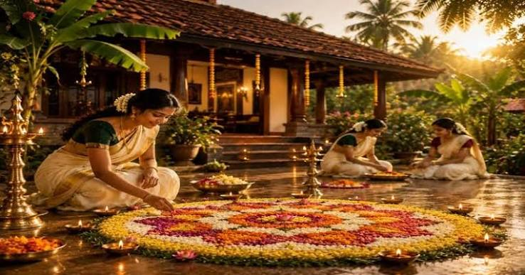

ONAM

About Onam
Onam is the premier cultural and harvest festival of Kerala, celebrated with immense joy, unity, and grandeur by Keralites across the globe regardless of their religion. Falling in the Malayalam month of Chingam (August–September), this ten-day festival commemorates the golden rule of the mythical King Mahabali and marks his annual homecoming to visit his beloved subjects. The festivities begin on Atham and culminate on the most auspicious day, Thiruonam, transforming the entire state into a vibrant tapestry of colors, music, and traditions. During this time, courtyards are adorned with intricate floral carpets known as Pookalam, houses are meticulously cleaned and decorated, and people dress in traditional attire, including the iconic cream-and-gold Kasavu sarees and mundus. A central highlight of the celebration is the grand Onam Sadya, a lavish multi-course vegetarian feast featuring over 25 distinct dishes served traditionally on a banana leaf. The festival's energetic spirit is further brought to life through spectacular cultural spectacles, including the thrilling Vallam Kali (snake boat races), the mesmerizing Pulikali (tiger dances), and traditional folk dances like Tumbhi Thullal and Kaikottikali. Ultimately, Onam transcends being a mere seasonal harvest celebration; it stands as a profound symbol of equality, prosperity, and nostalgic yearning for a utopian era where peace and harmony prevailed.
Core Traditions of Onam
The ten-day celebration of Onam is defined by several unique, time-honoured traditions that bring families and communities together.
- Pookkalam (Floral Carpets): Starting on the first day (Atham), families design intricate, circular flower patterns on the ground outside their homes to welcome the spirit of King Mahabali. The design grows in size and complexity each day as new layers and different varieties of local flowers are added.
- Onam Sadhya (The Grand Feast): Served on the main day (Thiruvonam), this is a massive, multi-course vegetarian feast of over 25 dishes served traditionally on a fresh plantain leaf. It balances complex seasonal flavors and concludes with Payasam (a sweet pudding).
- Onakkodi (Traditional Attire): People wear brand-new traditional clothing bought specifically for the festival. Women wear the elegant cream-and-gold Kasavu Saree, while men wear the traditional white Mundu (sarong) with a golden border.
- Vallam Kali (Snake Boat Races): High-energy races featuring magnificent, 100-foot-long Chundan Vallams (snake boats) take place across the backwaters of Kerala. Over a hundred oarsmen row in perfect unison to the rhythm of traditional boat songs (Vanchippattu).
- Pulikali (The Tiger Dance): A vibrant street pageant held primarily in Thrissur, where performers paint their bodies like tigers and hunters and dance through the streets to the thunderous beat of traditional drums.
- Traditional Folk Dances: Women gather in circles around a lit brass lamp to perform Kaikottikali (a graceful clapping dance) and Thumbi Thullal, celebrating the joy of the season.
- Onathappan (Clay Idols): Pyramidal structures made of clay representing both King Mahabali and Vamana (the incarnation of Lord Vishnu) are placed in the center of the Pookkalam on the final days of the festival.
Back To Festivals